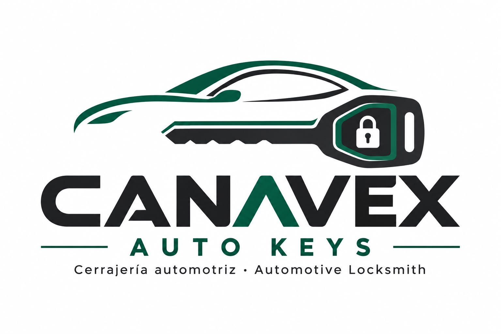
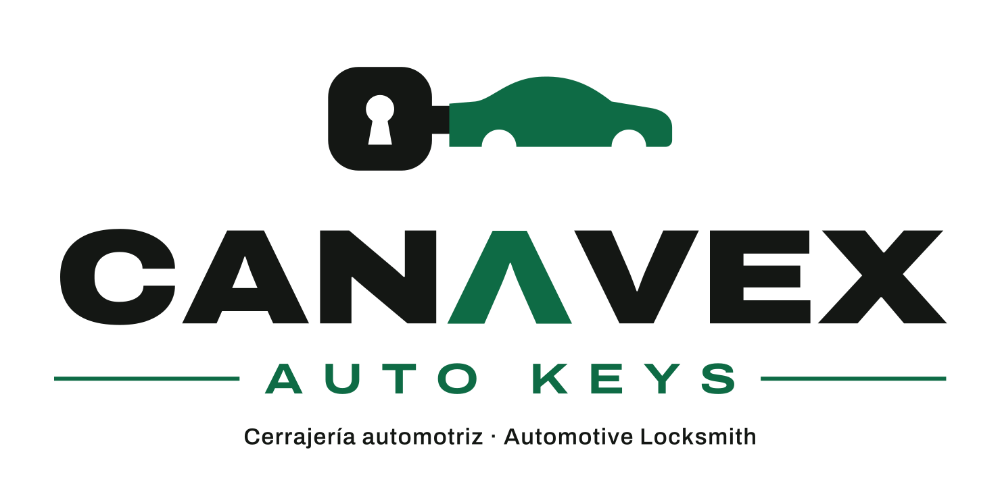
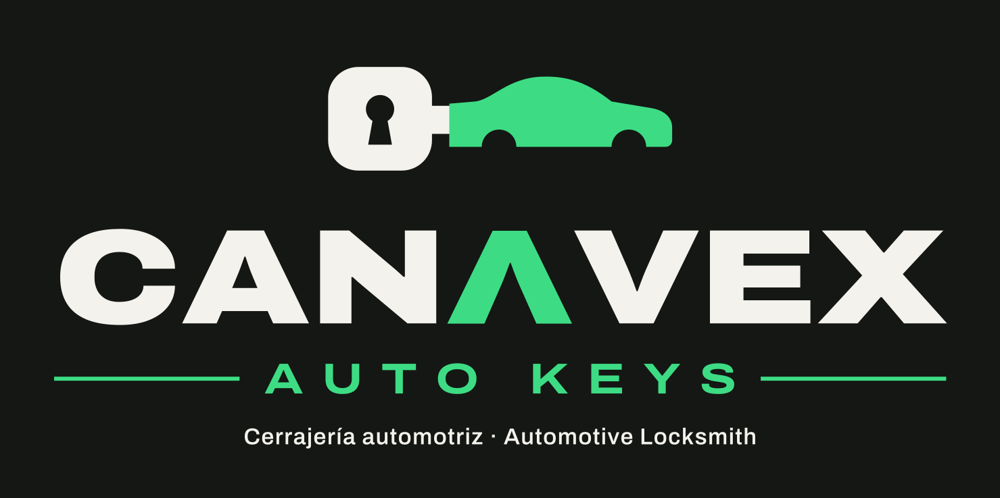
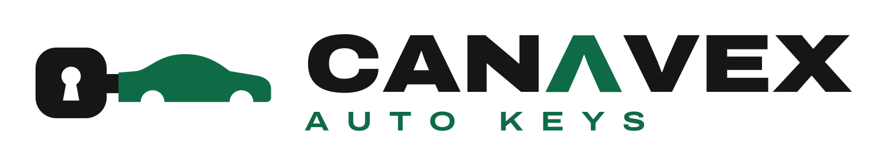
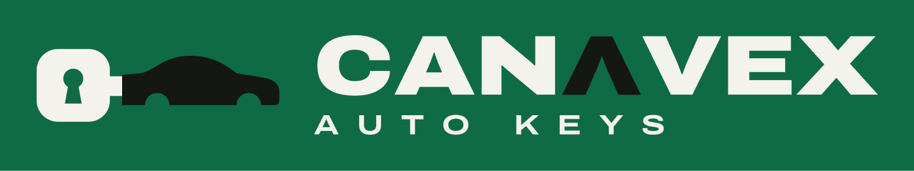
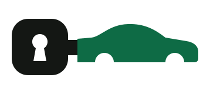
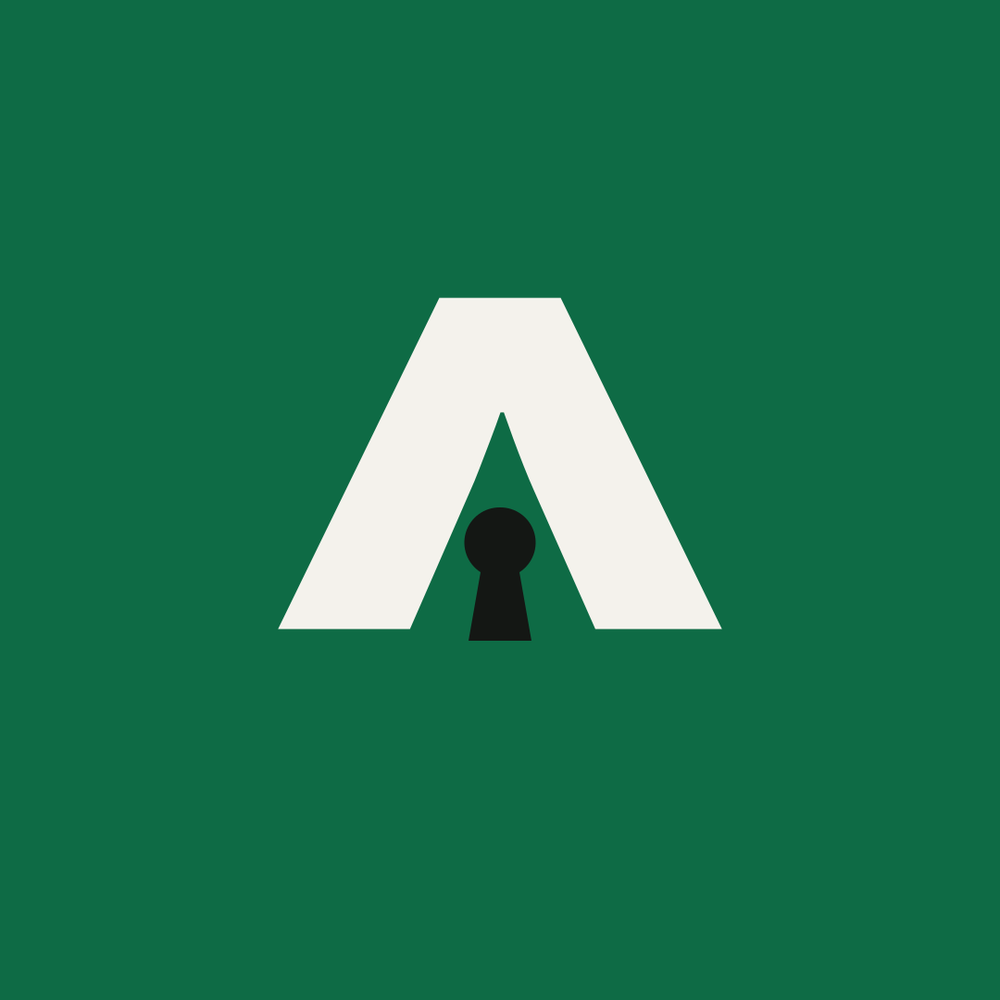
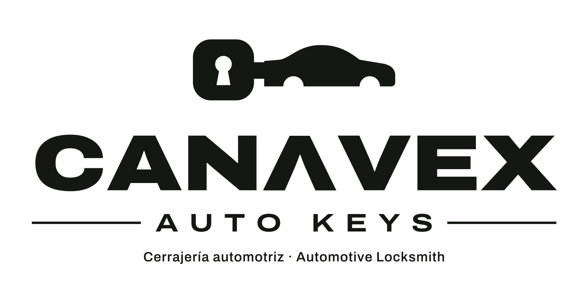

Identidad visual de CANAVEX Auto Keys, cerrajería automotriz en Estados Unidos. Una idea, dos idiomas, tipografía grande y movimiento que explica el problema antes de resolverlo.
De dos dibujos
a una idea.


- La hoja de la llave es el auto.
El original apilaba una silueta de auto y una llave. Ahora es una sola forma: la cabeza con el ojo de cerradura y una hoja con perfil de auto. Los pasos de rueda son los cortes de la llave.
- La Λ se queda.
La A sin travesaño del logo original era su mejor detalle. Se conserva en verde y ahora es la base del avatar: Λ más ojo de cerradura.
- Más ancha, más negra.
Archivo Expanded Black convertida a trazos. Se lee en un avatar de 40 px, en un vinil de puerta y en un reel visto de reojo.
- Funciona en una tinta.
Sin degradados ni sombras: sirve para bordado, sello, grabado láser en llaveros y vinil de un color.
Sistema de logo














Zona de protección
Alrededor del logo, deja libre como mínimo la altura de la Λ. Nada de texto ni bordes dentro de esa zona.
Tamaño mínimo
Horizontal: 120 px de ancho en pantalla, 30 mm impreso. Por debajo, usa el símbolo o el avatar.
No hacer
No estirar, no rotar, no cambiar la Λ por una A, no poner sombras ni degradados, no usarlo sobre fotos con mucho detalle.
Color
Dos fondos fuertes y uno claro. El verde siempre significa “resuelto”: los problemas viven en tinta y papel, la solución llega en verde.
- HEX
- #141714
- RGB
- 20 23 20
- Uso
- Problemas, cierres
- HEX
- #F4F2EC
- RGB
- 244 242 236
- Uso
- Fondos, información
Canavex
- HEX
- #0E6B45
- RGB
- 14 107 69
- Uso
- Soluciones, marca
- HEX
- #3DDC84
- Uso
- Solo sobre tinta
Tipografía
Una sola familia: Archivo (Google Fonts, licencia libre OFL). El eje de ancho hace el trabajo de dos familias: expandida y negra para gritar, normal para explicar.
Los titulares de redes se ajustan al ancho del cuadro línea por línea, como un póster. Siempre en mayúsculas y con punto final: es una afirmación, no una pregunta tímida.
Pictogramas
Un trazo de 8 px en retícula de 120, puntas redondas. Cada uno nombra un problema o una acción; en los reels se mueven para explicarla: el candado se cierra, la llave se parte, el switch se traba.
Movimiento
Motor en vivo: el mismo código genera los MP4. Arrastra la línea de tiempo para ver cada transición.
Cada reel sigue el mismo guion: problema → transición ojo de cerradura → solución → marca. La transición de la cerradura es la firma: aparece una vez por video, justo cuando el problema se resuelve.
- Ojo de cerraduraLa solución entra a través de la cerradura que se abre. 1 s, ease-in-out fuerte. Solo una vez por reel.
- BarridoCambio de escena con un corte que sube desde abajo (clip-path), 620 ms.
- Líneas que subenCada línea del titular sale de su propia máscara, 760 ms, escalonadas 90 ms.
- El ícono explicaLos pictogramas solo se mueven para contar el problema, nunca por adorno.
- Curvas
ease-out cubic-bezier(.23,1,.32,1)para entrar ·ease-in-out cubic-bezier(.77,0,.175,1)para mover. Nunca ease-in, nunca rebotes. - Nada sale de ceroLas escalas empiezan en 0.94–0.97 con opacidad, no en 0.
Voz bilingüe
Directa
Primero el problema, en las palabras del cliente. “¿Te quedaste afuera?”, no “Servicios de apertura vehicular”.
Tranquila
Quien nos busca está estresado. Frases cortas, sin alarmas, sin signos de exclamación de más.
Honesta
No prometemos minutos ni precios que no podemos sostener. Decimos qué hacemos y cómo contactarnos.
Así sí
- Te abrimos el carro.We get you in.
- Llave nueva en sitio.New key on the spot.
- Guarda este número.Save this number.
Así no
- ¡¡¡Los mejores precios del mercado!!!Superlativos y gritos vacíos.
- Soluciones integrales de cerrajería vehicular.Lenguaje de folleto.
- Llegamos en 10 minutos garantizado.Promesas que no dependen de nosotros.
Cada pieza se publica en dos versiones, español e inglés, con el mismo diseño. El inglés no es una traducción literal: “¿Te quedaste afuera?” se vuelve “Locked out?”.
Octubre,
listo para subir.
7 reels, 7 carruseles e historias de lunes a viernes, en español e inglés, con textos para copiar y archivos para descargar.